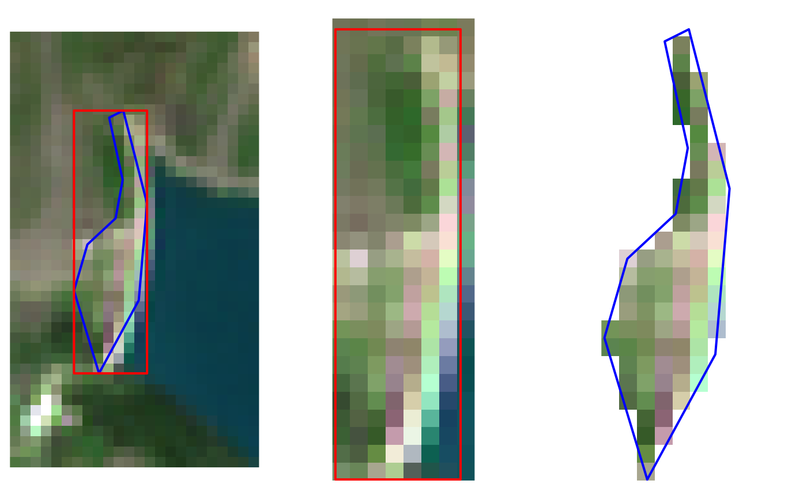
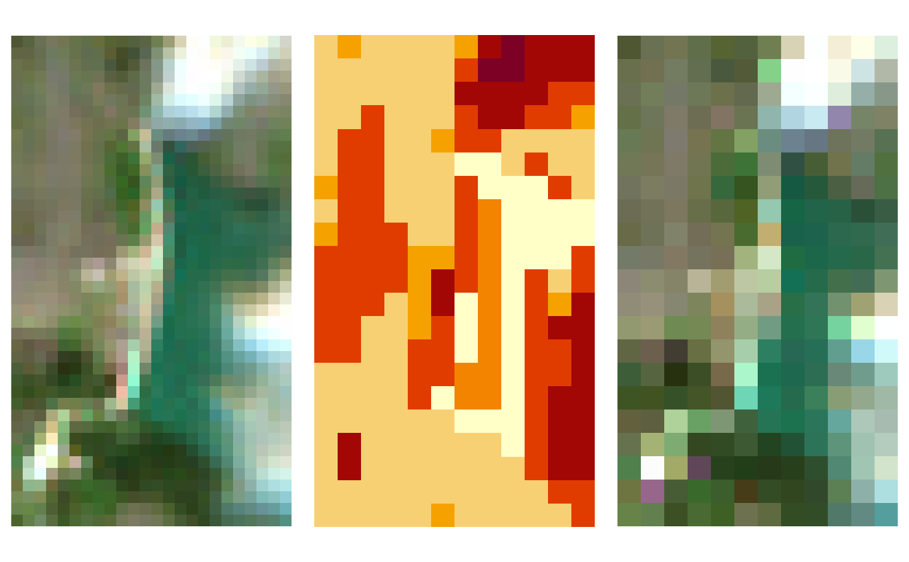
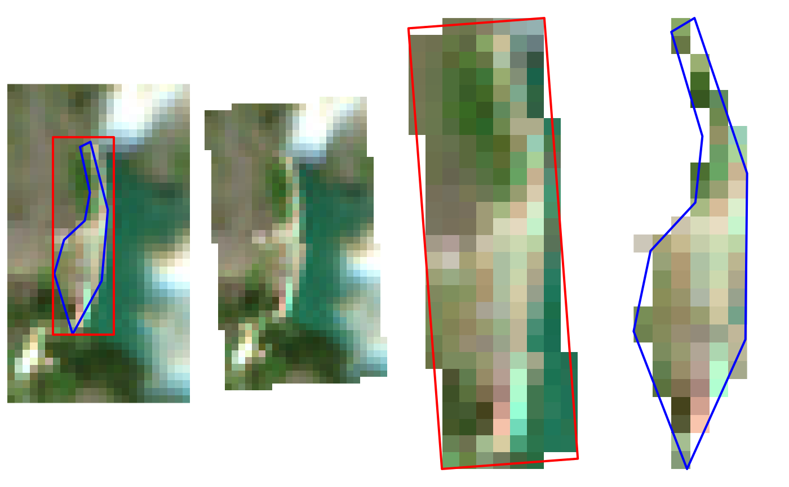
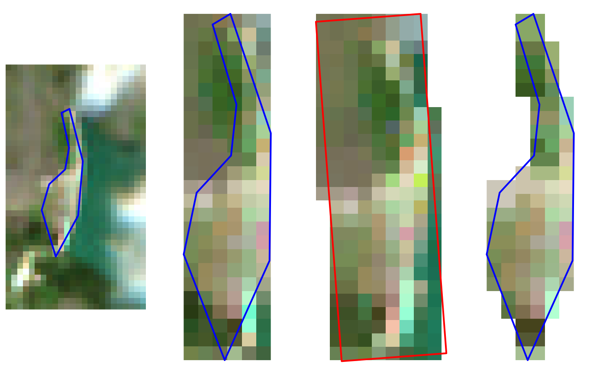

The function applies gdalwarp
to clip, reproject and/or warp raster files.
If not specified, the output format of each file is the same of the
corresponding source file.
gdal_warp( srcfiles, dstfiles, of = NULL, co = NULL, ref = NULL, mask = NULL, tr = NULL, t_srs = NULL, r = NULL, dstnodata = NULL, overwrite = FALSE, tmpdir = NA, rmtmp = TRUE )
| srcfiles | A vector of input file paths (managed by GDAL). |
|---|---|
| dstfiles | A vector of corresponding output file paths. |
| of | The output format (use the short format name). Default is the format of every input filename. |
| co | Character. Passes a creation option to the output format driver. Multiple -co options may be listed. See format specific documentation for legal creation options for each format. |
| ref | Path of the raster taken as reference: if provided,
parameters regarding the output grid (alignment, resolution and
extent) are taken from this raster. To set differently some of
these values, specify also other values of |
| mask | Spatial path or object from which to take the extent
of output files. If it is a polygon, this is used as masking layer;
otherwise, only the bounding box is considered. If both |
| tr | Numeric. ( |
| t_srs | Target spatial reference set (character). The coordinate systems that can be passed are anything supported by st_crs2. |
| r | Resampling_method ( |
| dstnodata | Set nodata values for output bands (different values
can be supplied for each band). If more than one value is supplied
all values should be quoted to keep them together as a single
operating system argument. New files will be initialized to this
value and if possible the nodata value will be recorded in the output
file. Use a value of NA to ensure that nodata is not defined.
A vector with the same length of |
| overwrite | Logical value: should existing output files be overwritten? (default: FALSE) |
| tmpdir | (optional) Path where intermediate files (maskfile)
will be created.
Default is a temporary directory.
If |
| rmtmp | (optional) Logical: should temporary files be removed? (Default: TRUE) |
NULL (the function is called for its side effects)
License: GPL 3.0
# \donttest{ #' # Define file names ex_sel <- system.file( "extdata/out/S2A2A_20190723_022_Barbellino_RGB432B_10.tif", package = "sen2r" ) ex_ref <- system.file( "extdata/out/S2A2A_20190723_022_Barbellino_SCL_10.tif", package = "sen2r" ) crop_poly <- system.file("extdata/vector/dam.geojson", package = "sen2r") crop_line <- sf::st_cast(sf::read_sf(crop_poly), "LINESTRING") # Simple clip test1 <- tempfile(fileext = "_test1.tif") gdal_warp(ex_sel, test1, mask = crop_line) # Clip and mask test2 <- tempfile(fileext = "_test2.tif") gdal_warp(ex_sel, test2, mask = crop_poly) # Show output crop_bbox <- sf::st_as_sfc(sf::st_bbox(crop_line)) oldpar <- par(mfrow = c(1,3), mar = rep(0,4)) image(stars::read_stars(ex_sel), rgb = 1:3) plot(crop_line, add = TRUE, col = "blue", lwd = 2) plot(crop_bbox, add = TRUE, border = "red", lwd = 2) image(stars::read_stars(test1), rgb = 1:3) plot(crop_bbox, add = TRUE, border = "red", lwd = 2) image(stars::read_stars(test2), rgb = 1:3)# Warp on a reference raster test3 <- tempfile(fileext = "_test3.tif") gdal_warp(ex_sel, test3, ref = ex_ref) # Show output par(mfrow = c(1,3)) par(mar = rep(0,4)); image(stars::read_stars(ex_sel), rgb = 1:3) par(mar = rep(2/3,4)); image(stars::read_stars(ex_ref)) par(mar = rep(0,4)); image(stars::read_stars(test3), rgb = 1:3)# Reproject all the input file test4 <- tempfile(fileext = "_test4.tif") gdal_warp(ex_sel, test4, t_srs = 32631) # Reproject and clip on a bounding box test5 <- tempfile(fileext = "_test5.tif") gdal_warp(ex_sel, test5, t_srs = "EPSG:32631", mask = stars::read_stars(test1)) # Reproject and clip on polygon (masking outside) test6 <- tempfile(fileext = "_test6.tif") gdal_warp(ex_sel, test6, t_srs = "31N", mask = crop_poly) # Show output crop_line_31N <- sf::st_transform(crop_line, 32631) test1_bbox <- sf::st_as_sfc(sf::st_bbox(stars::read_stars(test1))) test1_bbox_31N <- sf::st_transform(test1_bbox, 32631) par(mfrow = c(1,4), mar = rep(0,4)) image(stars::read_stars(ex_sel), rgb = 1:3) plot(crop_line, add = TRUE, col = "blue", lwd = 2) plot(test1_bbox, add = TRUE, border = "red", lwd = 2) image(stars::read_stars(test4), rgb = 1:3) image(stars::read_stars(test5), rgb = 1:3) plot(test1_bbox_31N, add = TRUE, border = "red", lwd = 2) image(stars::read_stars(test6), rgb = 1:3)# Use a reference raster with a different projection test7 <- tempfile(fileext = "_test7.tif") gdal_warp(ex_sel, test7, ref = test6) # Use a reference raster with a different projection # and specify a different bounding box test8 <- tempfile(fileext = "_test8.tif") gdal_warp(ex_sel, test8, mask = stars::read_stars(test1), ref = test6) # Use a reference raster with a different projection and a mask test9 <- tempfile(fileext = "_test9.tif") gdal_warp(ex_sel, test9, mask = crop_poly, ref = test6) # Show output par(mfrow = c(1,4), mar = rep(0,4)) image(stars::read_stars(ex_sel), rgb = 1:3) plot(crop_line, add = TRUE, col = "blue", lwd = 2) image(stars::read_stars(test7), rgb = 1:3) plot(crop_line_31N, add = TRUE, col = "blue", lwd = 2) image(stars::read_stars(test8), rgb = 1:3) plot(test1_bbox_31N, add = TRUE, border = "red", lwd = 2) image(stars::read_stars(test9), rgb = 1:3)